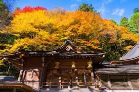

kifune shrine
Kibune is only around thirty minutes from Kyoto City, but it feels like worlds away. If you want to
escape the hustle and bustle to experience a bit of tranquility and calm, take the Eizan train north.
The area is filled to the brim with wildlife and seasonal flowers blooming along the river, and the
local restaurants and ryokan (traditional inns) serve meals on platforms built over the cool waters.
Kibune is also home to the Kifune Shrine, a shrine that worships kami associated with water. Three
separate locations make up Kifune Shrine; the main shrine, Yui no Yashiro, and the Okunomiya. Some
people choose to take a certain course to make this pilgrimage. First visit the main shrine, then after
you finish praying go straight back to the Okunomiya, then lastly drop by the middle shrine, Yui no
Yashiro, as you’re heading home. Not only stunning in the summer, Kifune Shrine is absolutely gorgeous
in winter as well. If you can brave the chilly weather, go to Kibune village when it is snowing and the
area is covered in a blanket of snow, becoming a dreamy wonderland.
The stone staircase lined with red wooden lanterns and covered by a canopy of maples leading up to
Kifune Shrine’s main hall is a famous sight often photographed in all seasons. This shrine was
patronized by the Imperial Court in the Heian Period, and during this time the Imperial Court sent
official delegations to the shrine and offered the deities horses as gifts when praying for certain
weather; a black horse to ask for rain and a white horse to ask for clear skies. Because of this
tradition, there are statues of horses at the shrine to this day. Near the main hall is a place to buy
amulets, as well as a small pool of water to use in fortune telling
At Kifune Shrine, a shrine related to prayers for water, you can enjoy some fortune telling using that
very medium. The fortune telling sheets of paper are called mizuura mikuji, and you can purchase them at
the shrine for a small fee. Simply place the sheet of paper in the small basin of water near the main
hall and wait until your fortune appears on the piece of paper, predicting various aspects of your life
including love, work, health, and dreams. With time, the water soaks through the paper and begins to
obscure the fortune, so don’t forget to snap a photo! Even if you don’t speak Japanese, you don’t need
to worry. There is a small QR code on the omikuji paper that can be scanned with a QR code reader
application on smartphones. If you scan this code your phone will pull up a page that offers
translations of the fortune (in English, Chinese, Simplified Chinese, and Korean), as well as an audio
recording of the fortune!
Address: 1 Chome-294 Kiyomizu, Higashiyama Ward, Kyoto, 605-0862
Official Site: www.kiyomizudera.or.jp/en/
Gallery